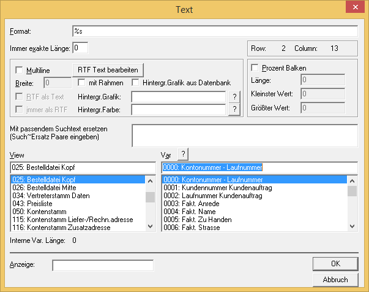

Nachdem das Fenster für das Einfügen von Variablen geöffnet wurde, können Sie im Fenster
Ø Views
aus den in der jeweiligen Programmsituation zur Verfügung stehenden Variablenquellen auswählen. Anhand des Namens, z.B.
025 BestelldateiKopf
oder
021 ArtikelView
können Sie erkennen, welche Variablen sich dahinter befinden.

In den Programmvariablen (Program Vars) sind jene Variablen vorhanden, die nicht in der Datenbank gespeichert sind, sondern zur Laufzeit des Programms errechnet werden, z.B. Seitennummern. Daraus folgt aber auch, dass nicht alle Variablen für alle Formulare zur Verfügung stehen. Welche Variable Sie aus welcher Quelle entnehmen, hängt von der Zielsetzung und dem angestrebten Ergebnis ab. Im Folgenden wird am Beispiel wird dargestellt, wie Sie die richtigen Variablen implementieren.
Beispiel
Die Variable für den Einstandspreis findet sich in der
Ø View
>> 021 Artikelview
als
Ø Var
>> 0031 Einstandspreis
sowie in der
Ø View
>> 026 Bestelldatei Mitte
als
Ø Var
>> 0023 Einstandspreis
Achten Sie bei der Verwendung der Variablen darauf, dass nur die Variable aus der View "Bestelldatei Mitte" den aktualisierten Wert aus dem Beleg enthält, da es bei der Belegbearbeitung die Möglichkeit gibt, den Einstandspreis manuell zu ändern.